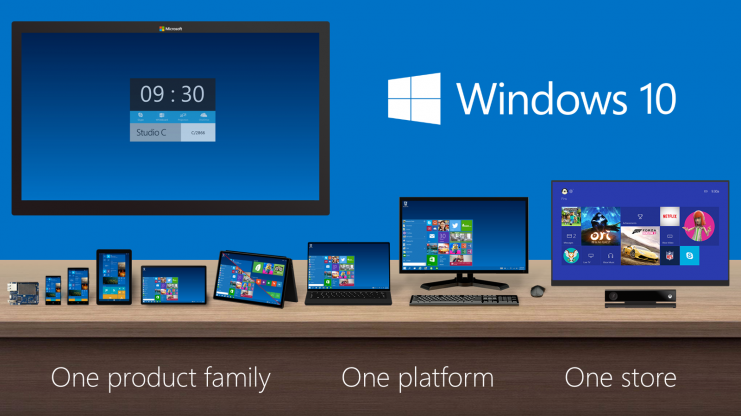

Microsoft sent some much needed shockwaves on the tech community when they unveiled they were going to name the next release Windows 10 instead of the expected Windows 9. The drastic approach attempts to signify the start of a new era for the operating system and the Windows team.

Customer Focus
They have made very clear it is important for their customers and users to dictate the platform by listening to feedback. This comes in stark contrast to unilateral decision-making within the company and then gambling on whether the changes will be appropriately receptive when public testing ensues. By that time, it is often too late to make significant adjustments to the code without risking deadlines or deal with sunk cost of developing maligned features. Enterprise customers are Microsoft’s primary source of income. If they cannot convince them to purchase volume licenses for the latest release, a chunk of potential revenue is lost until the next release, which was the case with Vista and W8. IT love slow and steady changes that allow for incremental learning and swift transition process. The more changes made between each release, the longer and more costly the upgrade becomes, by which time C-level executives will start to worry about its impact on their companies bottom line.
By involving enterprise customers to actively participate in the development process a full year ahead of release through their new Windows Insider Program, Microsoft can gauge what new features are high priority for implementation and fine-tuning before release, particularly those involved with permission control, security, networking, and general user productivity. To take it one step further, WIP also gives free access to all “beta addicts” like myself to test and offer valuable feedback. After having used W10 for only few days now, I have already received a few notification prompts after using specific features, like snapping and task view, asking for me to rate on a scale of 1-5.If you rate a feature low enough, it shows a text field may show to enter a written response detailing how they should improve the feature.
Imitation is Flattery
One thing I want to emphasize is the how Microsoft “copied” a lot of longstanding productivity features from OSX and added them into W10. The reality is that software development rarely cares about who used it first as we are constantly using other designs and features as an inspiration for our own. The bottom line comes down to whether it is appealing and improves the the product for the user. For example, Microsoft was one of the first to popularize the flat UI design they introduced as Metro in Windows 7. Since then Apple, Google, and countless others have followed in embracing flat as a software design trend that has continued over the last few years. Someone will always push the boundaries for everyone else to follow and progress is the end result.
I will now detail the major features in W10 that have significant impact in my workflow and offer my perspective on how users will utilize them. Chances are there are some features that I may not have tried yet and may not be detailed in this review. Strong comparisons to the OSX equivalent of these features will be made to highlight where improvements can be made to bring it up to the same level of polish. Without further ado, let’s get started.
Start Menu:
By far the most requested feature after its disappearance from W8. The first noticeable change after opening the start menu is the addition of the modern apps to the right half. In the left column, the user name and a button to access boot options is at the top. Just below is a short list of pinned shortcuts to favorite folders or applications. Below this are the recently opened applications. Some shortcuts have a clickable small rightward-pointing arrow that will expand it into the right half to show the most recently opened files of with that particular application or folder.
The “All Programs” is now “All Apps” that opens into the right column listing all the ultimate apps at the top of the and then any program folders towards the bottom of the list. The All Apps list does appear to remember its previous position in case the start menu is closed and need to access the same folder without having to scroll through the list again.
The search box now includes the ability to search the internet using Bing. Typing a search query first lists the relevant files on the computer at the top and then also lists related web search terms at the bottom. Choosing a web search term will open a Bing search app window to display the results. Overall, the search performance has been improved dramatically and feels a lot more responsive.
Ultimate Apps:
First Metro, then Modern, now Ultimate. What’s changed other than the name? Not much. Still the same boring tiles that take up an unreasonable amount of space. For example, the weather app is blue tile with a sunny/cloudy/rain image and some white text for showing the temperature. The tiles need a visual makeover to show more exciting backgrounds that reflect that app content. Currently most of the tiles look like a piece of paper with just a few words of text in the center and white space around it. At the very least, depending on the size of the tile, fit more useful information to take advantage of the extra space rather than just adding border padding.
However, I do feel conflicted with Microsoft shoehorning Modern apps in our face all over again. The lack of quality Modern apps even after three years of their futile efforts to spur interest from developers is a genuine reason for concern in its overall usefulness. A notable improvement for the apps is allowing them to run as a separate window rather than fullscreen only, bringing the usage behavior closer to how apps to run in OSX. But I still find it hard for developers to code with Ultimate Apps rather than building a traditional program. The opportunity here is for Microsoft to further integrate and bridge the gap between the two by adding the ability for programs use app tiles like widgets to display information rather than being two entirely separate entities.
Task View:
Clicking Task View button on the taskbar to activate the viewing mode. The windows that are shown are for the current desktop by default. The grey bar is at the bottom with the option to add more by clicking the grey box with a plus sign. When more than one desktop is present, the grey bar shows tiles for each of the desktop. Hovering over one of the desktop two, for example, will bring the desktop two windows into primary focus. Unlike OSX, there is no way to drag the a window to a particular desktop. Instead, you have to right click the window, which gives two options: “move to” if more than one desktop is available and “close.” The “move to” is a menu that displays “Desktop 2” as a potential option.
Just for giggles, I tried to see how many desktops are possible. Apparently, the tenth desktop tile is cutoff halfway at the end of the screen with no way to access the grey add desktop tile anymore. Essentially there is no overflow handling implemented yet to scroll through them, but I anticipate it will be added eventually.
The keyboard shortcut to switch between desktops is Windows key+Ctrl+(Left or Right arrow). This shortcut is impossible to do with one hand, therefore is quite cumbersome for power users to efficiently move between desktop without taking the right hand off the mouse. A better shortcut combination is Windows key+Shift+Number. This currently opens/focuses applications from the taskbar, but can also be done with the simpler Windows key+Number itself. So all Microsoft needs to do is remove duplication of shortcuts and reassign the Windows key+number for switching desktops as I expect its usefulness precedes that of focusing a window from the taskbar. In the meantime, I will assign a macro to two of my extra keyboard shortcut buttons to mimic this desired functionality.
Notifications:
Notifications, like instant messages or email preview, can quickly be seen without actually opening the full window. It provides a unified interface and consistency rather than all the different sized and design popups for each program. Many of the notification icons are somewhat pixelated, which is either due to Windows not properly scaling the program favicon or software developers need to implement additional code to properly support the notifications. As with the ultimate apps, the backgrounds on the notifications could use a little sprucing up, like adding transparency, to make it less boring.
Windows Update:
Functionality is still the same as it is in W8.1, except it includes a tab for checking to see if there are newer technical preview updates . I presume this feature will allow Microsoft to push updated builds from time to time as they squash more bugs and improve features, much like Apple uses Software Update for developer preview and public betas. How frequent these new previews will arrive remains to be scene, but I would expect once a month as a reasonable expectation.
Login:
One feature that I discovered is the ability to use a 4 digit pin as an alternative to a strong password. Apparently, this feature was implemented in W8 itself and went unnoticed on my part. Why is this useful? Convenience. My Windows desktop is in my apartment where I do not need to worry about random people trying to hack into it. There are 10,000 combinations possible and I am fairly sure that the login screen will lock itself after a few failed attempts, subsequently requiring the standard password instead. So the probability of someone actually getting unauthorized access is essentially none unless they saw you entering the code. In the event that you have others close by or in a public setting, there is an option below the text box to switch back to the standard password entry. I applaud Microsoft of coming up with a well thought out feature and implementing it well.
When the correct pin is entered, it automatically hits “enter” for you. I have not decided if it is good or bad yet. I can see this is trying to replicate the mobile experience where lockscreens often lack an enter button and simply unlock once the correct code is received in order to save an extra keystroke. But on a desktop with a keyboard/keypad, I always have hit the enter button manually after entering a password of any kind and still find myself doing that even in the pin mode. Either this is a behavior I just need to get used to or a setting needs to be added to allow manually hitting enter.
Conclusion:
Microsoft can strongly regain product satisfaction by offering free upgrades for W8 to consumers to encourage them to stay updated to the latest version of Windows rather than falling behind. Shareholders may argue this could lead to slightly lower revenues, but the cost of slow release adoption is even more costly and detrimental to the entire Windows ecosystem that includes PC manufacturers and software providers. By getting people to use W10 at home, this essentially provides free training for using W10 at work, thereby reducing the costs for enterprise to upgrade as well. As mentioned earlier, enterprise is where the big money is and Microsoft will benefit in the long run from appeasing both groups of customers.
Published on October 17, 2014